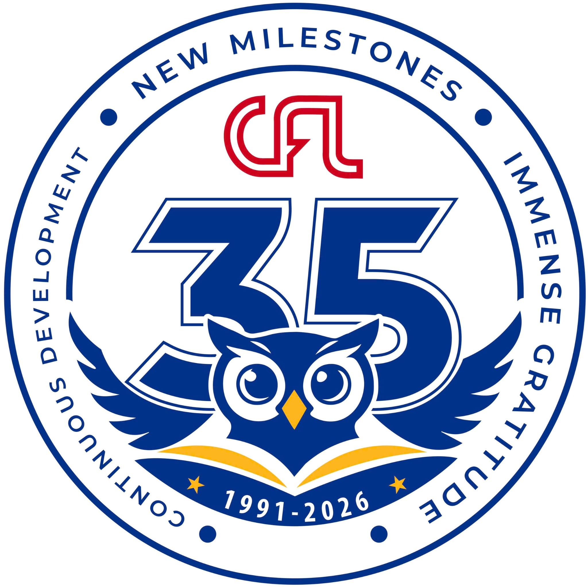

Trung tâm Ngoại ngữ • Đại học Cần Thơ

Đây là đề luyện tập, không phải đề thi VSTEP chính thức. Nội dung Paraphrase Challenge chưa có trong file Shopping & Money được cung cấp nên không tự bổ sung câu hỏi mới.